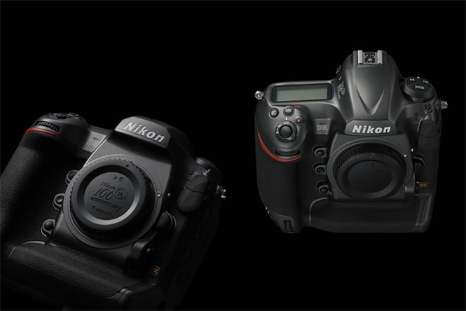

Nikon ra mắt máy ảnh DSLR dùng lớp vỏ kim loại bóng mượt

Theo Digitaltrends, Nikon đã chuẩn bị sự kiện đón mừng sinh nhật lần thứ 100 kể từ ngày thành lập bằng việc công bố 2 máy ảnh phong cách, 3 ống kính và 1 ống kính tele. Cụ thể, các phiên bản giới hạn kỷ niệm 100 năm của D5, D500, ba ống kính f/2.8 và
ống kính 70-200E đã được Nikon công bố vào ngày 3.4 vừa qua. Về cơ bản đó là những sản phẩm hiện có nhưng được bọc bằng vỏ kim loại bóng mượt. hành đoàn, cũng như các tài liệu liên quan đến chuyến bay UA 3411, theo
Reuters. Ông Paul Callan, luật sư về dân sự lẫn hình sự ở New York, nhận định bác sĩ Dao sẽ thắng lớn khi kiện United Airlines.
Trong thực tế các sản phẩm nói trên được trưng bày lần đầu tiên tại CP+ diễn ra ở Nhật Bản vào tháng 2
như là một phần nằm trong hoạt động kỷ niệm 100 năm thành lập công ty (25.7.1917 - 25.7.2017). Thông báo mới nhất của Nikon nhằm bổ sung thêm các chi tiết về sản phẩm, tuy nhiên giá bán và thời điểm phát hành dự kiến chỉ được công ty tiết
lộ vào tháng 6 tới. Phiên bản giới hạn của D5 sẽ được bán với một vỏ kim loại độc đáo, hộp đựng ghi ấn bản 100 năm và một cuốn sách đặc biệt thông tin chi tiết về ấn bản, bao gồm cả bản giới thiệu sự hỗ trợ của Nikon trong các tàu
vũ trụ.
Với D500, phiên bản rút gọn của D5, cũng được phát hành trong một phiên bản giới hạn với một kiểu dáng thiết kế tương tự, nhưng đựng trong hộp nhỏ hơn cùng body giống hệt nhau.
Nikon cũng tạo ra 3 ống kính, gồm 14-24mm f/2.8 ED, 24-70mm f/2.8 ED VR và 70 - 200mm f/2.8E FL ED VR. Cả 3 ống kính này được bán dưới dạng bộ đồ có vỏ bằng súng.
Ống kính 70-200E riêng biệt cũng sẽ được bán, cùng với một trường hợp hiển thị đặc biệt. Được biết, Nikon D5 là máy ảnh trang bị những thông số kỹ thuật tốt nhất của Nikon ở thời điểm hiện tại. Còn D500 trang bị các tính năng tương tự,
nhưng sử dụng cảm biến APS-C nhỏ hơn. Cùng với máy ảnh và ống kính, Nikon cũng phát hành một dây da máy ảnh ấn bản đặc biệt và 2 ống nhòm đặc biệt.